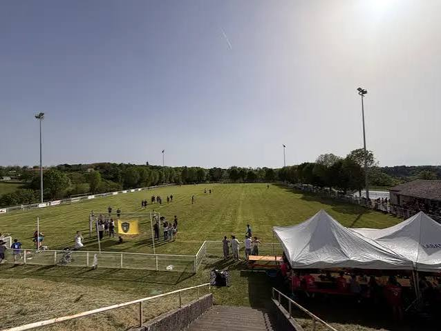

Déroulé de la journée (13h00 – 20h00)
Inspirée de l'esprit convivial des tournois inter-entreprises et étudiants, la Nanterre Footcup alterne compétition sur les terrains et animations au sein du village partenaire.
| Horaire | Étape | Détails et animations |
|---|---|---|
| 13h00 – 13h45 | Accueil & briefing | Émargement des 16 équipes, remise des packs joueurs, briefing des capitaines et ouverture des stands (restauration, associations, souvenirs). |
| 13h45 – 14h00 | Coup d'envoi officiel | Échauffement collectif sur les terrains et mot d'ouverture par l'équipe organisatrice (Master 2 MELS). |
| 14h00 – 16h15 | Phase de poules | 4 groupes de 4 équipes. Matchs intenses de 8 minutes : les 2 premiers de chaque groupe se qualifient pour les quarts de finale. |
| 16h15 – 16h45 | Pause & animations village | Ravitaillement aux stands restauration, défi précision / radar de frappe ouvert à tous et échanges avec les associations. |
| 16h45 – 17h30 | Quarts de finale | Passage au format 15 minutes avec séance de tirs au but directe en cas d'égalité. |
| 17h30 – 18h15 | Demi-finales | Rencontres à élimination directe de 15 minutes pour décrocher une place en finale. |
| 18h15 – 18h45 | Petite finale & Grande Finale | Match pour la 3e place suivi de la grande finale de 15 minutes devant l'ensemble du public. |
| 18h45 – 19h15 | Remise des trophées | Podium et remise des récompenses aux trois meilleures équipes de la Nanterre Footcup. |
| 19h15 – 20h00 | Concert de clôture | Performance live de la fanfare de l'Université Paris Nanterre et moment convivial autour des stands. |
Le village d'animations
Tout au long de l'après-midi, joueurs et spectateurs peuvent profiter de l'espace détente autour des terrains : food-trucks, buvette associative et boutique souvenirs aux couleurs de la Nanterre Footcup.
